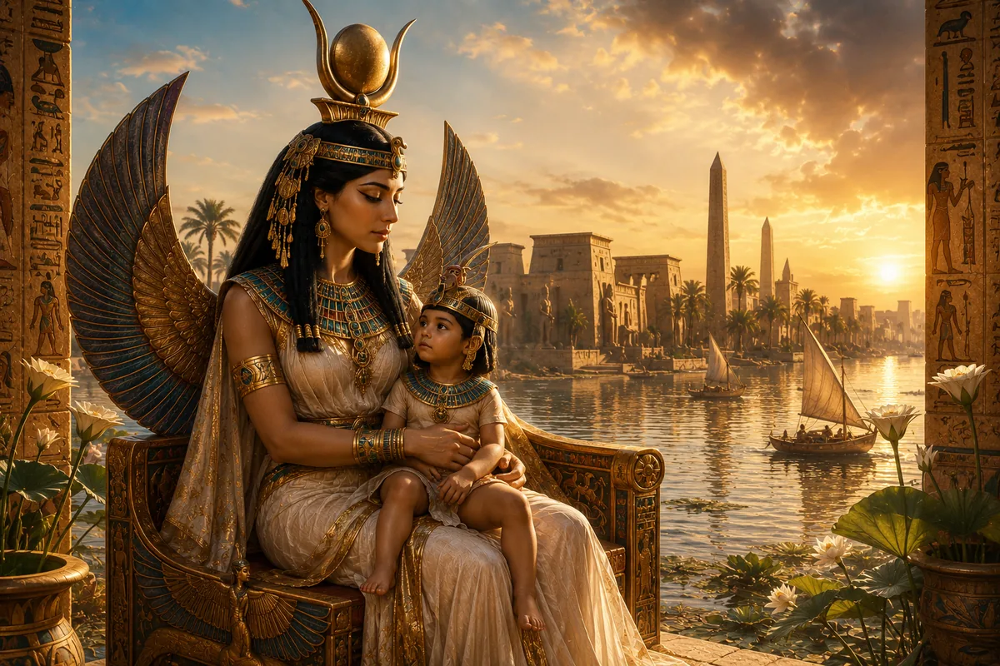

Antik Mısır mitolojisinde bazı tanrılar güçleriyle, bazıları korkutucu görünümleriyle, bazıları ise evrenin düzenindeki rolleriyle öne çıkar. Fakat İsis, bunların hepsinden biraz daha farklı bir yerde durur. Çünkü o yalnızca bir tanrıça değildir; sadakatin, anneliğin, büyünün, koruyuculuğun ve yeniden doğuş umudunun en güçlü sembollerinden biridir.
İsis'in hikâyesi, Antik Mısır'ın en büyük mitolojik anlatılarının tam merkezinde yer alır. Osiris'in öldürülmesi, bedeninin yeniden bir araya getirilmesi, Horus'un gizlice büyütülmesi ve Set'e karşı verilen mücadele, İsis olmadan tamamlanamaz. Bu nedenle onu yalnızca "Osiris'in eşi" ya da "Horus'un annesi" olarak tanımlamak büyük bir eksiklik olur.
İsis, Mısır mitolojisinde aktif bir güçtür. Yas tutar ama çaresiz kalmaz. Kaybeder ama aramaktan vazgeçmez. Oğlunu korur ama yalnızca anne figürü olarak kalmaz. Büyü bilgisiyle tanrılar arasında bile ayrıcalıklı bir konuma sahip olur. Bu yüzden İsis, Antik Mısır'ın en sevilen ve en uzun ömürlü tanrıçalarından biri hâline gelmiştir.
Onun etkisi yalnızca Mısır'la sınırlı kalmamıştır. Zamanla Akdeniz dünyasına yayılmış, Yunan ve Roma dönemlerinde de tapınım görmüş, hatta bazı bölgelerde evrensel ana tanrıça figürüne dönüşmüştür. Bu durum, İsis'in neden yalnızca Antik Mısır mitolojisinin değil, dünya dinler tarihi açısından da önemli bir figür olduğunu gösterir.
Peki İsis kimdi? Neden büyüyle ilişkilendirildi? Osiris efsanesindeki rolü neydi? Horus'u nasıl korudu? Ve binlerce yıl boyunca neden bu kadar güçlü bir tanrıça olarak hatırlandı?
Bu soruların cevabı bizi Antik Mısır'ın en etkileyici kadın figürlerinden birinin dünyasına götürüyor.
İsis Kimdir?
İsis, Antik Mısır dininde büyü, annelik, koruma, şifa ve krallıkla ilişkilendirilen en önemli tanrıçalardan biridir. Mısır dilindeki adı genellikle "Aset" ya da "Eset" biçiminde aktarılır. Bugün kullandığımız "İsis" adı ise Yunanca biçiminden gelmiştir.
Mısır mitolojisinde İsis, gökyüzü tanrıçası Nut ile yeryüzü tanrısı Geb'in kızıdır. Kardeşleri arasında Osiris, Set ve Nephthys bulunur. Aynı zamanda Osiris'in eşi ve Horus'un annesidir. Bu aile ilişkileri, onu Antik Mısır mitolojisinin en merkezi figürlerinden biri hâline getirir.
Ancak İsis'in önemi yalnızca aile bağlarından kaynaklanmaz. Onu özel yapan şey, mitlerde üstlendiği aktif roldür. Birçok eski mitolojide kadın figürler arka planda kalırken, İsis hikâyenin yönünü değiştiren ana güçlerden biridir. Osiris öldürüldüğünde onun bedenini arayan, parçalarını bir araya getiren, büyü gücüyle onu yeniden yaşama döndüren ve Horus'u koruyarak Set'e karşı verilecek mücadelenin zeminini hazırlayan kişi İsis'tir.
Bu yüzden İsis, Antik Mısır'da yalnızca şefkatli bir anne olarak değil, aynı zamanda güçlü, bilge ve dirençli bir tanrıça olarak görülmüştür. Onun temsil ettiği annelik pasif bir koruma hâli değildir. Mücadele eden, arayan, iyileştiren ve yeniden kuran bir anneliktir.
İsis'in büyüyle ilişkilendirilmesi de bu noktada anlam kazanır. Mısırlılar için büyü, karanlık ya da kötü bir güç değildi. Evrenin işleyişini bilen ve kutsal sözleri doğru şekilde kullanabilenlerin sahip olduğu ilahi bir bilgiydi. İsis, bu bilginin en güçlü sahiplerinden biri kabul edilmiştir.
İsis'in Kökeni ve Ailesi
İsis'in hikâyesini anlamak için onun ait olduğu ilahi aileye bakmak gerekir. Antik Mısır mitolojisinde İsis, Nut ve Geb'in çocuklarından biridir. Bu aile, Mısır'ın en önemli mitolojik döngüsünün merkezinde yer alır. Osiris düzeni ve bereketi, Set kaosu ve çölleri, Nephthys koruyucu yas figürünü, İsis ise büyü, annelik ve yeniden doğuş gücünü temsil eder.
İsis'in eşi Osiris, mitolojiye göre Mısır'a düzen getiren bilge bir kraldır. Ancak kardeşi Set tarafından öldürülür ve bedeni parçalanarak farklı yerlere dağıtılır. İşte İsis'in mitolojideki en güçlü rolü bu noktada başlar. O, Osiris'in ölümünü yalnızca yas tutarak karşılamaz. Onu bulmak, yeniden bir araya getirmek ve ölüm karşısında yaşamı yeniden mümkün kılmak için harekete geçer.
Bu hikâye, İsis'in Antik Mısır'daki konumunu derinden etkilemiştir. Çünkü o yalnızca bir eş değil, ölüme karşı direnen kutsal bir figür hâline gelir. Osiris'in yeniden bütünleşmesi ve ölümden sonraki yaşamın mümkün hâle gelmesi, büyük ölçüde İsis'in bilgeliği ve büyü gücüyle ilişkilendirilir.
İsis'in annelik yönü ise Horus üzerinden şekillenir. Osiris'in ölümünden sonra İsis, Horus'u Set'in tehlikesinden koruyarak gizlice büyütür. Bu anlatı, onu yalnızca krallık mitinin değil, anne-çocuk korumasının da en güçlü sembollerinden biri hâline getirmiştir.
Bu nedenle İsis'in ailesi yalnızca mitolojik bir soy ağacı değildir. Bu aile ilişkileri, Antik Mısır'ın düzen, kaos, ölüm, yeniden doğuş ve meşru krallık hakkındaki düşüncelerini anlamamızı sağlar.
İsis ve Osiris Efsanesi
İsis'in adını Antik Mısır mitolojisinin merkezine yerleştiren en önemli anlatı, Osiris efsanesidir. Bu hikâye olmadan İsis'i anlamak neredeyse imkânsızdır. Çünkü onun sadakati, bilgeliği, büyü gücü ve koruyuculuğu en açık biçimde bu efsanede görünür hâle gelir.
Mitolojik anlatıya göre Osiris, Mısır'ın meşru kralıdır. Ülkeye düzen getirmiş, insanlara tarımı öğretmiş ve refah sağlamıştır. Ancak kardeşi Set onun gücünü kıskanır ve tahtı ele geçirmek ister. Set'in hazırladığı tuzak sonucunda Osiris öldürülür. Bazı anlatılarda bedeni bir sandığa konularak Nil'e bırakılır, bazı versiyonlarda ise daha sonra parçalanarak Mısır'ın farklı bölgelerine dağıtılır.
Bu noktada hikâyenin yönünü değiştiren kişi İsis olur. Osiris'in kaybolan bedenini aramak için yola çıkar. Onun arayışı yalnızca kayıp bir eşin yasını anlatmaz. Aynı zamanda düzenin yeniden kurulması için verilen kutsal mücadeleyi temsil eder.
İsis sonunda Osiris'in bedenini bulur ve parçalarını yeniden bir araya getirir. Bu olay, Antik Mısır'ın ölüm ve yeniden doğuş inancında son derece önemli bir yere sahiptir. Çünkü Osiris'in bedeni yeniden bütünleştiğinde, ölümden sonraki yaşamın mümkün olduğu düşüncesi de güçlenir.
İsis burada yalnızca sevgi dolu bir eş değildir. O, ölüm karşısında yaşamı yeniden mümkün kılan ilahi güçtür. Büyü bilgisiyle Osiris'i geçici olarak canlandırır ve bu birleşmeden Horus doğar. Böylece Osiris'in mirası tamamen yok olmaz; Horus üzerinden devam eder.
Bu efsane, İsis'in neden Antik Mısır'da bu kadar saygı gördüğünü açıklar. O kaybın karşısında teslim olmaz. Dağılmış olanı toplar, ölmüş olanı yeniden anlamlı hâle getirir ve gelecekte düzeni yeniden kuracak Horus'u dünyaya getirir.
İşte bu yüzden İsis, Antik Mısır'ın en güçlü yeniden doğuş sembollerinden biri hâline gelmiştir.
Horus'u Koruyan Anne Tanrıça
Osiris'in ölümünden sonra İsis'in hayatındaki en önemli görevlerden biri, oğlu Horus'u korumak olur. Çünkü Set yalnızca Osiris'i ortadan kaldırmakla yetinmemiştir. Taht üzerindeki hak iddiasını sürdürebilmek için Osiris'in soyunun devam etmesini de engellemek istemektedir. Bu nedenle Horus doğduğu andan itibaren tehlike altındadır.
Mitolojik anlatılara göre İsis, küçük Horus'u Nil Deltası'nın bataklıklarında gizlice büyütür. Bu bölge tesadüfen seçilmiş değildir. Bataklıklar hem ulaşılması zor yerlerdir hem de Mısır'ın kutsal koruma alanlarından biri olarak görülür. İsis burada oğlunu yalnızca düşmanlarından saklamaz; aynı zamanda gelecekte üstleneceği büyük role de hazırlar.
Bu döneme ait anlatılar, İsis'in koruyucu yönünü en açık şekilde gösterir. Bazı metinlerde Horus'un zehirli hayvanlar tarafından sokulduğu, hastalandığı ya da çeşitli tehlikelerle karşı karşıya kaldığı anlatılır. Her defasında İsis'in bilgeliği ve büyü gücü devreye girer. Oğlunu iyileştirir, korur ve hayatta kalmasını sağlar.
Bu hikâyeler zamanla yalnızca mitolojik anlatılar olmaktan çıkmış, günlük yaşamın da bir parçası hâline gelmiştir. Antik Mısır'da birçok anne, çocuklarını korumak için İsis'e dua ederdi. Çünkü İsis yalnızca Horus'un annesi değil, bütün annelerin koruyucusu olarak görülüyordu.
Bu nedenle onun kültü yalnızca tapınaklarla sınırlı kalmadı. Evlerde, muskalar üzerinde ve halk inançlarında da önemli bir yer edindi. İnsanlar çocuklarını hastalıklardan korumak, doğumların güvenli geçmesini sağlamak ve ailelerini muhafaza etmek için İsis'ten yardım istiyordu.
İsis'in annelik anlayışı da dikkat çekicidir. O yalnızca şefkat gösteren bir figür değildir. Gerektiğinde mücadele eden, risk alan ve çocuğunun geleceği için büyük fedakârlıklar yapan güçlü bir karakterdir. Bu yönüyle Antik Mısır'ın en etkili kadın figürlerinden biri hâline gelmiştir.
İsis ve Büyünün Gücü
Antik Mısır'da büyü kavramı günümüzdeki popüler kültür anlayışından oldukça farklıydı. Mısırlılar için büyü, doğaüstü ve karanlık bir güç değil; evrenin işleyişini anlamaya yarayan kutsal bir bilgi biçimiydi. Tanrıların sahip olduğu bazı bilgiler, doğru sözler ve ritüeller aracılığıyla etkili olabiliyordu. İşte İsis bu kutsal bilginin en güçlü temsilcilerinden biri olarak kabul edilmiştir.
Birçok metinde İsis'in bilgeliği ve büyü gücü diğer tanrılar tarafından bile saygıyla karşılanır. Onun sıradan insanlardan üstün olması yalnızca tanrısal kökeninden kaynaklanmaz. Aynı zamanda bilgiye ve kutsal sırları öğrenmeye olan hâkimiyetinden gelir.
İsis ile ilgili en dikkat çekici anlatılardan biri, Ra'nın gizli adını öğrenmesiyle ilgilidir. Antik Mısır inancında bir varlığın gerçek adını bilmek, onun özü hakkında bilgi sahibi olmak anlamına geliyordu. Mitolojik hikâyeye göre İsis büyük bir zekâ ve sabırla Ra'nın gizli adını öğrenmeyi başarır. Böylece olağanüstü bir bilgi ve güç elde eder.
Bu anlatının amacı yalnızca dramatik bir hikâye sunmak değildir. Aynı zamanda bilginin gücünü vurgular. İsis kaba kuvvetle değil, bilgeliğiyle öne çıkar. Onun gücü çoğu zaman savaş alanında değil, doğru bilgiyi kullanabilmesinde ortaya çıkar.
Bu özellik, İsis'i Mısır mitolojisindeki birçok tanrıdan ayırır. Horus cesaretiyle, Set gücüyle, Ra yaratıcı kudretiyle öne çıkarken; İsis çoğu zaman zekâsı, bilgeliği ve stratejik düşünme yeteneğiyle ön plana çıkar. Bu nedenle büyü tanrıçası olarak anılması, yalnızca mistik güçlere sahip olmasıyla ilgili değildir. Aynı zamanda bilginin dönüştürücü gücünü temsil etmesiyle de ilgilidir.
İsis Neden Bu Kadar Seviliyordu?
Antik Mısır'da birçok güçlü tanrı ve tanrıça vardı. Ancak çok azı İsis kadar geniş bir halk desteğine sahip olmuştur. Bunun nedeni, onun insanların günlük yaşamıyla doğrudan bağlantı kurabilmesidir.
Ra evrenin düzenini temsil ediyordu. Osiris ölümden sonraki yaşamın hükümdarıydı. Horus krallığın koruyucusuydu. İsis ise insanların günlük kaygılarına daha yakın bir figür olarak görülüyordu. Anneler, eşler, hastalar ve korunmaya ihtiyaç duyan insanlar kendilerini onunla özdeşleştirebiliyordu.
İsis'in hikâyesi kayıp yaşamış insanların anlayabileceği bir hikâyedir. Eşini kaybeder, onu arar, büyük zorluklarla mücadele eder ve oğlunu korumaya çalışır. Bu yönleriyle son derece insani duygular taşır. Ancak bütün bunları ilahi bir güçle birleştirir.
Bu nedenle İsis zamanla yalnızca Mısır'da değil, Mısır dışındaki toplumlarda da saygı görmeye başlamıştır. Özellikle Helenistik Dönem ve Roma İmparatorluğu sırasında onun kültü Akdeniz'in birçok bölgesine yayılmıştır. Yunanistan'dan İtalya'ya kadar uzanan geniş bir coğrafyada İsis'e adanmış tapınaklar inşa edilmiştir.
Bu yayılma tesadüf değildir. Çünkü İsis'in temsil ettiği değerler evrensel kabul edilebilecek niteliktedir. Koruma, sadakat, annelik, bilgelik ve yeniden doğuş gibi kavramlar farklı kültürlerde de karşılık bulmuştur.
Bu nedenle İsis yalnızca Antik Mısır'ın önemli bir tanrıçası değildir. Aynı zamanda antik dünyanın en etkili dini figürlerinden biridir. Onun kültünün binlerce yıl boyunca yaşamaya devam etmesi, insanlar üzerinde bıraktığı etkinin ne kadar güçlü olduğunu göstermektedir.
İsis'in Tarih Boyunca Değişen Rolü
Antik Mısır'ın birçok tanrısı belirli dönemlerde önem kazanmış, daha sonra etkisini kaybetmiştir. İsis'in hikâyesi ise biraz farklıdır. Çünkü onun kültü yalnızca Mısır tarihinde uzun süre yaşamamış, aynı zamanda ülkenin sınırlarını da aşmayı başarmıştır.
İlk dönemlerde İsis daha çok Osiris mitinin önemli bir parçası olarak görülüyordu. Ancak zamanla kendi başına büyük bir tanrıçaya dönüştü. Onun büyü bilgisi, koruyucu yönü ve annelikle kurduğu güçlü bağ, halk arasında giderek daha fazla saygı görmesini sağladı. Özellikle Yeni Krallık döneminden itibaren İsis kültünün Mısır'ın farklı bölgelerinde hızla yayıldığı görülmektedir.
Helenistik Dönem'e gelindiğinde ise İsis'in etkisi yalnızca Mısır'la sınırlı kalmamıştı. Büyük İskender'in fetihlerinden sonra Mısır ile Akdeniz dünyası arasındaki etkileşim arttıkça İsis de yeni toplumlarla tanıştı. Yunanlar onu kendi tanrıçalarıyla ilişkilendirmeye başladı. Bu süreçte İsis'in bazı özellikleri genişledi ve daha evrensel bir koruyucu figüre dönüştü.
Roma İmparatorluğu döneminde ise İsis kültü zirveye ulaştı. İtalya'dan Hispanya'ya, Anadolu'dan Kuzey Afrika'ya kadar uzanan geniş bir coğrafyada ona adanmış tapınaklar bulunuyordu. Bu durum oldukça dikkat çekicidir. Çünkü Antik Mısır'ın birçok tanrısı yerel sınırlar içinde kalırken, İsis uluslararası bir tanrıçaya dönüşmüştü.
Onun başarısının arkasında temsil ettiği değerler bulunuyordu. İnsanlar yalnızca güçlü bir tanrıçaya değil, aynı zamanda kendilerini anlayabilecek bir koruyucuya ihtiyaç duyuyordu. İsis'in sadakati, anneliği, bilgeliği ve koruyuculuğu farklı kültürlerde de karşılık bulmayı başarmıştı.
Bu nedenle İsis, Antik Mısır tarihinin ötesine geçerek antik dünyanın en etkili dini figürlerinden biri hâline gelmiştir.
İsis Hakkında Yaygın Yanlış Bilgiler
Günümüzde İsis hakkında dolaşan birçok bilgi, modern yorumlarla tarihsel gerçeklerin birbirine karışmasından kaynaklanmaktadır. Özellikle internet ortamında ve popüler kültürde sıkça tekrar edilen bazı iddialar, Antik Mısır kaynaklarıyla tam olarak uyuşmamaktadır.
En yaygın yanlışlardan biri, İsis'in yalnızca annelik tanrıçası olduğu düşüncesidir. Annelik onun en önemli yönlerinden biri olsa da, İsis bundan çok daha fazlasını temsil eder. O aynı zamanda büyünün, bilgeliğin, korumanın ve yeniden doğuşun tanrıçasıdır. Onu yalnızca anne figürüne indirgemek, mitolojideki rolünü büyük ölçüde daraltır.
Bir başka yanlış bilgi, İsis'in yalnızca Osiris'in eşi olarak önemli olduğu yönündedir. Gerçekte birçok anlatıda olayları yönlendiren ana karakterlerden biri İsis'tir. Osiris'in bedenini bulması, Horus'u koruması ve çeşitli mitolojik olaylarda gösterdiği zekâ, onun bağımsız bir güç olarak değerlendirildiğini açıkça göstermektedir.
Bazen İsis'in yalnızca Mısır'da tapınım gördüğü de iddia edilir. Oysa tarihsel veriler bunun doğru olmadığını ortaya koymaktadır. Helenistik ve Roma dönemlerinde İsis kültü Akdeniz'in geniş bir bölümüne yayılmış, farklı toplumlar tarafından benimsenmiştir.
İsis ile ilgili bir başka yanlış yorum da onun büyü tanrıçası olduğu için karanlık ya da gizemli güçlerle ilişkilendirilmesidir. Antik Mısır'da büyü kavramı günümüzdeki anlamıyla değerlendirilmezdi. Mısırlılar için büyü, evrenin işleyişini anlamaya ve korumaya yardımcı olan kutsal bir bilgiydi. İsis'in büyüyle ilişkilendirilmesi de bu nedenle olumlu bir özellik olarak görülüyordu.
Bu yanlış anlamalar giderildiğinde İsis'in gerçek önemi daha net ortaya çıkar. O yalnızca bir anne, eş ya da büyücü değildir. Antik Mısır'ın en güçlü, en etkili ve en sevilen tanrıçalarından biridir.
Sonuç: İsis Neden Antik Mısır'ın En Güçlü Tanrıçalarından Biriydi?
Antik Mısır mitolojisinde birçok tanrı ve tanrıça bulunmasına rağmen, çok azı İsis kadar kalıcı bir etki bırakmıştır. Bunun nedeni yalnızca güçlü bir tanrıça olması değildir. İsis'in hikâyesi, insanların en temel duygularına ve deneyimlerine dokunur.
O, kayıp karşısında vazgeçmeyen bir eştir. Tehlikeler karşısında mücadele eden bir annedir. Bilgisiyle tanrıları bile etkileyebilen bir bilgedir. Aynı zamanda ölüm karşısında yeniden doğuş umudunu temsil eden kutsal bir figürdür.
Osiris efsanesindeki rolü, Horus'u koruyuşu ve büyüyle olan ilişkisi, onu Antik Mısır'ın en merkezi karakterlerinden biri hâline getirmiştir. Ancak İsis'in etkisi bununla sınırlı kalmamıştır. Kültü yüzyıllar boyunca yaşamış, farklı toplumlara yayılmış ve Mısır'ın sınırlarını aşarak antik dünyanın en tanınan tanrıçalarından biri olmuştur.
Bugün İsis'in hikâyesine baktığımızda yalnızca eski bir mitoloji anlatısı görmeyiz. Aynı zamanda sadakatin, koruyuculuğun, bilginin ve direncin sembolünü de görürüz. Belki de onu binlerce yıl boyunca unutulmaz kılan şey tam olarak budur.
Çünkü İsis'in hikâyesi yalnızca tanrıların hikâyesi değildir. Kaybın ardından ayağa kalkmanın, sevdiklerini korumanın ve umudu kaybetmemenin hikâyesidir.
Sık Sorulan Sorular
İsis ne tanrıçasıdır?
İsis, Antik Mısır'da büyü, annelik, koruma, şifa ve bilgelikle ilişkilendirilen önemli bir tanrıçadır. Aynı zamanda Horus'un annesi ve Osiris'in eşidir.
İsis ve Osiris'in ilişkisi nedir?
Mitolojiye göre İsis ve Osiris kardeş ve aynı zamanda eştir. Osiris'in Set tarafından öldürülmesinden sonra İsis onun bedenini bulup yeniden bir araya getirmiş ve Horus'un doğmasını sağlamıştır.
İsis neden bu kadar önemlidir?
İsis, Osiris efsanesindeki merkezi rolü, Horus'u koruması ve büyü bilgisi nedeniyle Mısır mitolojisinin en etkili tanrıçalarından biri hâline gelmiştir. Ayrıca kültü Mısır dışına yayılan nadir tanrılardan biridir.
İsis büyü tanrıçası mıydı?
Evet. İsis, Antik Mısır'da büyü ve kutsal bilgiyle ilişkilendirilen en güçlü tanrıçalardan biri olarak kabul edilmiştir. Ancak Mısırlıların büyü anlayışı modern anlamdaki sihir kavramından farklıdır.
Horus'un annesi kimdir?
Horus'un annesi İsis'tir. Mitolojiye göre İsis, Horus'u Set'ten koruyarak gizlice büyütmüş ve gelecekteki mücadelesine hazırlamıştır.
İsis'in sembolleri nelerdir?
İsis genellikle başında taht biçimli bir taçla tasvir edilir. Bazı dönemlerde inek boynuzları ve güneş diskiyle de gösterilmiştir. Kanatlarını açmış koruyucu tasvirleri de oldukça yaygındır.
İsis kültü Mısır dışında da yayılmış mıdır?
Evet. Helenistik ve Roma dönemlerinde İsis kültü Akdeniz dünyasının birçok bölgesine yayılmıştır. Yunanistan, İtalya ve Anadolu gibi bölgelerde ona adanmış tapınaklar bulunmuştur.
İsis günümüzde neden hâlâ ilgi çekmektedir?
İsis yalnızca bir mitolojik figür değil, aynı zamanda sadakat, annelik, bilgelik ve koruyuculuğun sembolü olarak görülmektedir. Bu nedenle tarih ve mitoloji meraklılarının ilgisini çekmeye devam etmektedir.
Kaynakça
- Pinch, Geraldine. Egyptian Mythology: A Guide to the Gods, Goddesses, and Traditions of Ancient Egypt. Oxford University Press, 2004.
- Wilkinson, Richard H. The Complete Gods and Goddesses of Ancient Egypt. Thames & Hudson, 2003.
- Hart, George. The Routledge Dictionary of Egyptian Gods and Goddesses. Routledge, 2005.
- Assmann, Jan. The Search for God in Ancient Egypt. Cornell University Press, 2001.
- Teeter, Emily. Religion and Ritual in Ancient Egypt. Cambridge University Press, 2011.
- Hornung, Erik. Conceptions of God in Ancient Egypt: The One and the Many. Cornell University Press, 1996.
- Lichtheim, Miriam. Ancient Egyptian Literature. University of California Press.
- Lesko, Barbara S. The Great Goddesses of Egypt. University of Oklahoma Press, 1999.
- British Museum – Ancient Egyptian Religion Collection.
- The Metropolitan Museum of Art – Egyptian Art Collection.
- University College London (UCL) – Digital Egypt for Universities Project.
- Griffith Institute, Oxford – Ancient Egyptian Religious Texts Archive.